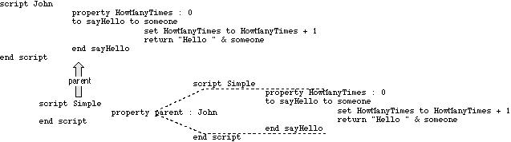
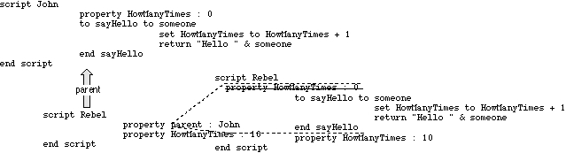
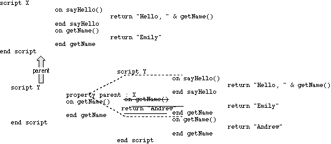

How Inheritance Works
To understand how inheritance works, think of a child script object as containing a hidden copy of each of the handlers and properties inherited from its parent. If the child does not have its own definition of a property or handler, it uses the inherited (hidden) property or handler. If the child has its own definition of a particular property or handler, then it ignores the inherited property or handler.Figure 9-1 shows the relationship between a parent script object called
Johnand a simple child script object calledSimple. The figure includes two versions of the child script object. The version on the left shows the actual script object definition for the child scriptSimple. The version on the right shows how the script object definition would look with the inherited properties and handlers copied in. The inherited properties and handlers are shown between dotted lines, to indicate that they aren't actually a part of the script object definition forSimple. As you can see,Simpleinherits the HowManyTimes property and thesayHellohandler from its parent.Figure 9-2 shows another parent-child relationship. As in the previous example, the child script object inherits the HowManyTimes property and the
sayHellohandler from its parent,John. But this time, the child script object, calledRebel, has its own HowManyTimes property, so it doesn't use the one inherited from the parent. In the figure, the inherited property that is not used is crossed out.Figure 9-1 Relationship between a simple child script and its parent

Figure 9-2 Another child-parent relationship

Drawing diagrams like Figure 9-1 and Figure 9-2 can help you understand more complicated relationships between parent and child script objects. For example, if you were to guess the result of the following script without sketching a diagram, you might conclude that the result of the
sayHellocommand is"Hello Emily". However, the correct result is"Hello Andrew", as you can see in Figure 9-3.script X on sayHello() return "Hello, " & getName() end sayHello on getName() return "Emily" end getName end script script Y property parent : X on getName() return "Andrew" end getName end script tell Y to sayHello()Figure 9-3 A more complicated child-parent relationship
Even though script
Xin Figure 9-3 sends itself thegetNamecommand, the command is intercepted by the child script, which substitutes its own version of thegetNamehandler. AppleScript always maintains the first target of a command as the "self" to which inherited commands are sent, redirecting to the child any inherited commands the parent sends to itself.The relationship between a parent script object and its child script objects is dynamic. If the properties of the parent change, so do the inherited properties of the children. For example, the script object
Simplein the following script inherits its Vegetable property from script objectJohn.script John property Vegetable : "Spinach" end script script Simple property parent : John end script set Vegetable of John to "Swiss chard" Vegetable of Simple --result: "Swiss chard"When you change the Vegetable property of script objectJohnwith the Set command, you also change the Vegetable property of the child script objectSimple. The result of the last line of the script is"Swiss chard".Similarly, if a child changes one of its inherited properties, the value of the parent property changes. For example, the script object
JohnSonin the following script inherits the Vegetable property from script objectJohn.script John property Vegetable : "Spinach" end script script JohnSon property parent : John on changeVegetable() set my Vegetable to "Zucchini" end changeVegetable end script tell JohnSon to changeVegetable() Vegetable of John --result: "Zucchini"When you change the Vegetable property of script objectJohnSonto"Zucchini"with thechangeVegetablecommand, the Vegetable
property of script objectJohnalso changes.The previous example demonstrates an important point about inherited properties: to refer to an inherited property from within a child script object, you must use the reserved word
myorof meto indicate that the value to which you're referring is a property of the current script object. (You can also use the wordsof parentto indicate that the value is a property of the parent script object.) If you don't, AppleScript assumes the value is a local variable.For example, if you refer to
Vegetableinstead ofmy Vegetablein thechangeVegetablehandler in the previous example, the result is"Spinach".script John property Vegetable : "Spinach" end script script JohnSon property parent : John on changeVegetable() set Vegetable to "Zucchini" (* creates a local variable called Vegetable; doesn't change value of the parent's Vegetable property *) end changeVegetable end script tell JohnSon to changeVegetable() Vegetable of John --result: "Spinach"